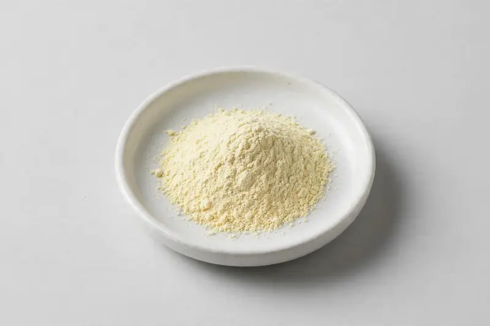

Elderflower — floral botanical extract for seasonal wellness and functional-beverage formulations.

Overview
Elderflower extract is a floral botanical powder derived from Sambucus nigra flowers, typically standardized around total flavonoid content for consistency in formulated products. Demand has grown alongside functional beverages, lozenges and seasonal wellness SKUs in Western markets, where buyers value its light floral profile and label-friendly positioning. As a Xi'an-based trading company sourcing through vetted partner producers, we work from your target spec rather than a fixed catalogue, confirming feasibility honestly before you commit.
Specifications below reflect commonly requested options in the market — not a stock list. Share your target spec and we'll confirm exactly what we can supply, honestly.
| Specification | Details |
|---|---|
| Botanical identity | Elderflower extract powder |
| Source material | Dried flowers |
| Marker compound | Commonly requested spec grades: total flavonoids by UV; ratios and other marker options discussed per buyer target |
| Appearance | Pale yellow-cream fine powder |
| Analytical methods | Methods referenced in buyer specifications: HPLC, UV |
| Mesh size | Typically 80–100 mesh (confirm per inquiry) |
| Testing | COA/TDS arranged on request; scope agreed per your spec |
Applications
Documentation
We don't claim in-house labs or certifications we don't hold. COA and TDS documents can be arranged on request, and testing scope is agreed against your specification before supply.
FAQ
Related products
Withania somnifera
Key marker: Withanolides
View specs →Rhodiola rosea
Key marker: Rosavins & Salidroside
View specs →Silybum marianum
Key marker: Silymarin
View specs →Triticum aestivum
Key marker: Chlorophyll
View specs →Hordeum vulgare
Key marker: Chlorophyll / SOD
View specs →Send your target spec and volumes — we'll respond with a tailored quotation.
Request a Quote